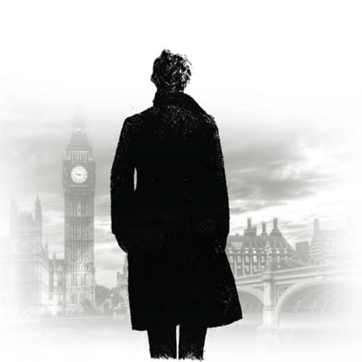

5-İNTİKAM MELEKLERİ

Gece boyu aldıkları yol karmakarışık dar koyaklarla, düzensiz, sağa sola kayaların saçılmış olduğu patikalarla doluydu. Birden çok kez yollarını kaybettiler ama Hope’un dağlarla ilgili geniş bilgisi hep doğru yola dönebilmelerini sağladı. Sabah olunca muhteşem olduğu kadar vahşi bir güzellik serildi önlerine. Her yönlerini, büyük, karla kaplı, birbirlerinin omuzları üzerinde ufka bakan zirveler sarmıştı. İki yanlarındaki kaya kümeleri o kadar dikti ki çam ve karaçamlar en ufak ani bir rüzgârla devrilecek gibi tepelerinde asılı duruyor görüntüsü veriyordu. Bu korkuları boşa değildi, bu şekilde yukarıdan düşmüş büyük kayalar ve ağaçlar çıplak vadiye saçılmıştı. Hatta geçerlerken gümbürdeyerek ve boğuk bir hışırtıyla aşağı düşen koca bir kaya, sessiz geçitte yankılar yarattı ve yorgun atların korkup koşmasına sebep oldu.
Güneş doğu ufkundan yavaş yavaş yükselirken devasa dağların kasketleri bayram yerindeki lambalar gibi birbiri ardına aydınlandı. Bu görkemli manzara yüreklerini canlandırdı ve onlara taze güç sağladı. Koyağı basmış bir selin oluşturduğu su birikintisinde mola verdiler. Atları su içmeye bırakıp, kendileri hızlı bir kahvaltı etmeye koyuldular. Lucy ve babası daha uzun dinlenmeyi düşünüyordu ama Jefferson Hope çok dirençliydi. “Şu saatlerde peşimizden yola koyulacaklar,” dedi. “Her şey hızımıza bağlı. Carson’a sağ salim varınca ömrümüzün geri kalanını dinlenerek geçirebiliriz.”
Günün geri kalanı boyunca dar koyaklarla boğuştular. Akşam olduğunda düşmandan elli kilometre kadar uzaklaştıklarını hesaplamışlardı. Geceleyin sarkık bir kayanın altını sığınak olarak seçtiler, böylece soğuk rüzgârdan korunabileceklerdi. Orada ısınmak için birbirlerine yanaşıp birkaç saat uyku çektiler. Ama gün doğmadan kalkıp tekrar yola koyuldular. İzlendiklerine dair hiçbir işaret görmemişlerdi. Jefferson Hope hışmına uğradıkları korkunç örgütün ulaşabileceğinden bayağı uzakta olduklarını düşündü. Ama o demirden elin nerelere uzanabileceğini ve ne kadar kısa zaman sonra yaklaşıp onları ezeceğinin farkında değildi.
Kaçış yolunun ikinci gününün ortalarına doğru kısıtlı erzakları bitmeye başladı. Bu durum avcıyı fazla rahatsız etmiyordu çünkü dağlarda avlanabilirdi. Daha önce birçok kez hayatta kalabilmek için silahına sarılmıştı. Barınabilecek bir yer buldu ve çalı çırpı toplayıp ateş yaktı. Böylece dostları ısınabilecekti. Artık deniz seviyesinden 1.500 metre yüksekteydiler ve hava çok soğuktu. Atları bağladıktan ve Lucy ile vedalaştıktan sonra ne rast gelirse avlamak üzere yola çıktı. Ardına bakınca yaşlı adamla genç kızın, arka plandaki atlar ile katırın önünde ateşin yanına çömeldiğini gördü. Sonra araya giren kayalar görüşünü kapattı.
Bir koyaktan öbürüne hiçbir şey avlayamadan birkaç kilometre yürüdü. Ağaçlardaki izlerden bölgede çok fazla ayı olduğunu anlayabiliyordu. Birkaç saatlik sonuçsuz aramadan sonra umudunu kaybedip geri dönmeyi düşündü. Ama kafasını yukarı çevirince kalbini memnuniyetle dolduran bir şey gördü. Sivri tepelerden birinde, yüzyüz elli metre yukarıda koyuna benzeyen ama koca iki boynuzu olan bir yaratık gördü. Koca Boynuz, adı buydu, muhtemelen avcının göremediği bir sürünün gözcülüğünü yapıyordu. Şans o ki ters tarafa bakıyor, Hope’u göremiyordu. Jefferson Hope yüzüstü yattı ve bir süre nişan almaya çalıştıktan sonra tetiği çekti. Hayvan havaya fırladı, uçurumun kenarında bir süre sendeledi ve sonunda gürültüyle altındaki vadiye düştü.
Yaratık kaldırılamayacak kadar ağırdı, bu yüzden avcı bir but ve biraz göğüs kesip ayırmakla yetindi. Avı omzunda hızlı adımlarla geri dönüş yoluna koyuldu, çünkü akşam çökmeye başlamıştı. Çok geçmeden karşısına çıkan zorluğun farkına vardı. Heyecanla, aşina olduğu koyaklardan uzaklaşmıştı. Geri dönüş yolunu bulması pek kolay olmayacaktı. İçinde olduğu vadi birçok geçide bu geçitler de başka geçitlere bölünmüştü. Birbirlerine o kadar benziyorlardı ki ayırt edilmeleri imkânsızdı. Yollardan birini bir buçuk kilometre kadar yürüdü, sonunda daha önce hiç görmediğinden emin olduğu bir dağın akıntısına çıktı. Yanlış yolu seçtiğini anlayınca başka bir tanesini denedi ama sonuç yine aynıydı. Nihayet tanıdık gelen bir geçide ulaştığında gece hızla çökmekteydi. Geçit tanıdıktı ama ay henüz doğmamıştı ve iki taraftaki yüksek kayalıklar karanlık yaratıyordu. Bu da işi zorlaştırıyordu. Yükünün ağırlığı altında, günün yorgunluğu üzerinde olduğu halde, kalbine her adımın kendisini Lucy’ye yaklaştırdığı, onlara yolculuğun geri kalanını güvence altına alacak kadar yemek götürdüğü düşüncesini yansıtarak yoluna devam ediyordu.
Onları bıraktığı kayalığın girişine yaklaşıyordu. Gecenin karanlığına rağmen bu kayalığın çevresini saran şekilleri hatırlıyordu. Merakla kendisini beklediklerini düşündü, çünkü yaklaşık beş saattir ortada yoktu. Kalbi ferahlamıştı, elini ağzına götürdü ve geldiğini belli etmek için bağırdı, sesi küçük vadi içinde yankılanacaktı. Durup cevap gelmesini bekledi. Vadiyi inleten, defalarca dönüp kulağına gelen kendi ıslığının yankısı dışında hiçbir ses gelmedi. Öncekinden daha yüksek sesle, tekrar bağırdı. Ama bir süre önce buralarda bıraktığı arkadaşlarından yine hiçbir ses gelmedi. Üzerine belirsiz, isim koyamadığı bir dehşet çöktü ve çılgınca koşmaya başladı, o heyecanla çok değerli yiyeceği de düşürdü.
Köşeyi dönünce ateşin yaktığı nokta hemen karşısına çıktı. Bazı odunlardan hâlâ duman çıkıyordu ama o gittiğinden beri ateşin güçlendirilmediği belliydi. Aynı ölüm sessizliği sürüyordu. Korkularının gerçek olduğuna karar verince hızlı davranmaya başladı. Ateş kalıntılarının etrafında hiçbir canlı yoktu; atlar, adam ve kız gitmişti. O yokken ani ve korkunç bir felaket olduğu açıktı. Hepsini alıp götüren ve hiçbir iz bırakmamış bir felaket.
Bu darbenin şaşkınlığı ve sersemliğiyle Jefferson Hope’un başı dönmeye başladı ve düşmemek için tüfeğinden destek aldı. Esaslı bir macera adamıydı ama o, bu geçici güçsüzlüğünden hemen sıyrıldı. Yarı kor bir tahta parçasını alıp alevlendirdi ve bunun yardımıyla kamp yerini incelemeye başladı. Yer nal izleriyle doluydu, demek ki atlı kaçakları kalabalık bir grup yakalamıştı. İzlerin yönleri Salt Lake City’ye gittiklerini gösteriyordu. İki arkadaşını da yanlarına mı almışlardı? Jefferson Hope olayın böyle geliştiğine kanaat getirmişti ki gözü yerde bir şeye takıldı. Bu şey tüm sinirlerini oynatmıştı. Kampın hemen yakınında bir kırmızı toprak yığını vardı ve bunun daha önce burada olmadığından emindi. Bunun yeni kazılmış bir mezar olduğuna şüphe yoktu. Genç avcı yaklaşınca üzerine bir tahta takılmış olduğunu gördü, tahtaya bir de kâğıt parçası tutturulmuştu. Kâğıttaki açıklama kısaydı:
JOHN FERRIER SALT LAKE CİTY’Lİ Ölümü: 4 Ağustos 1860
Kısa süre önce burada bıraktığı o güçlü yaşlı adam artık yoktu, ondan geriye kalan sadece bu mezar yazısıydı. Jefferson Hope korkuyla ikinci bir mezar olup olmadığına baktı, yoktu. Lucy atlılar tarafından asıl kaderine kavuşturulmak üzere yani Yaşlıların oğullarından birinin haremine katılmak üzere geri götürülmüştü. Genç adam kızın kaderinin gerçekten böyle olduğunu, bunu engellemek için yapacak hiçbir şeyi olmadığını anlayınca, yaşlı adamla aynı yerde yatıyor olmayı diledi.
Ama maceracı ruhu yine titredi ve umutsuzluğunu ve ataletini alt edip üste çıktı. Yapacak hiçbir şeyi yoksa bile hayatını intikam almaya adayabilirdi. Jefferson Hope sonsuz sabır ve azimle birleştirdiği acı dolu bir kin sahibiydi. Bunu da beraber yaşadığı Kızılderililerden öğrenmiş olmalıydı. Metruk ateşin başında otururken kendi elleriyle uygulayabileceği tek bir şeyin acısını derinlemesine ve tam bir şekilde dindirebileceğini hissetti. Güçlü isteği ve bitmez tükenmez enerjisini bu sonuca adamalıydı. Sert, beyazlamış bir suratla etleri düşürdüğü noktaya döndü. Ateşi canlandırdı ve birkaç gün yetecek kadar et pişirdi. Bu etleri bohçaladı ve yorgun olmasına rağmen dağların arasından intikam meleklerine ulaşmak üzere yola koyuldu.
Beş gün boyunca önceden atla geçtiği koyaklardan ve geçitlerden yayan ilerledi. Geceleri güvenli bir kaya altı bulup birkaç saatlik uyku çekti. Ama gün doğmadan kalkıp yola koyuluyordu. Altıncı gün kötü biten kaçışlarının başladığı Kartal Kanyonu’na ulaştı. Oradan azizler diyarını görebiliyordu. Bitkin halde tüfeğine yaslandı, cılız yumruğunu sıktı ve vahşice aşağıdaki sessiz, koca şehre baktı. Bazı sokaklarda bayraklar asılı olduğunu gördü, demek ki bayram kutlaması gibi bir şey vardı. Bunun ne olduğunu anlamaya çalışırken kendisine yaklaşan nal sesleri duydu. Cowper adında bir Mormon’du bu, Jefferson Hope onun için birkaç iş yapmıştı. Lucy Ferrier’e ne olduğunu öğrenmek için onunla konuşmaya karar verdi.
“Ben Jefferson Hope,” dedi. “Hatırladın mı beni?”
Mormon şaşkınlığını saklayamadı, bu yırtık pırtık kıyafetli, saçı başı dağılmış, yüzü bembeyaz olmuş, kızgın, vahşi bakışlı gezginin, eskinin genç avcısı olduğunu anlamak güçtü. Nihayet karşısındakinin kim olduğuna ikna olunca adamın şaşkınlığı dehşete dönüştü.
“Delirdin mi sen? Buraya nasıl gelirsin?” dedi heyecanla. “Şu an seninle konuşuyor olmaktan dolayı benim bile hayatım tehlikeye girdi. Kutsal Dörtlü, Ferrier’lerin kaçmasına yardımcı olduğu için senin hakkında yakalama emri çıkardı.”
“Onlardan da, yakalama emirlerinden de korkmuyorum,” dedi Hope ciddi bir şekilde. “Konuyu biraz biliyor olmalısın Cowper. Tüm sevdiklerin aşkına sorduklarıma cevap vermeni istiyorum. Tanrı’nın adını veriyorum, bana cevap vermeyi reddetme.”
“Ne öğrenmek istiyorsun?” diye sordu Mormon rahatsızca. “Çabuk ol, kayaların gözü, ağaçların kulağı var.” “Lucy Ferrier’e ne oldu?”
“Dün Genç Drebber ile evlendi. Hey! Sakin ol, sakin ol! Ruhun çıkmış gibisin.”
“Kusuruma bakma,” dedi Hope, bayılacak gibiydi. Dudaklarına kadar beyazlamıştı, dayanmakta olduğu kayanın üzerine oturdu. “Evlendi mi dedin?”
“Evet, dün. Bağış Evi’ndeki bayraklar o yüzden var. Genç Drebber ve Genç Stangerson arasında bayağı çekişme oldu onunla evlenmek için. Onları izleyen gruba ikisi de katılmış,Stangerson babayı vurmuş. Bu onu daha güçlü bir aday yapmış olmalı. Ama Konsey konuyu tartışırken Drebber’ın tarafı daha ağır basmış ve peygamber, kızı Drebber’a vermiş. Ama kimse o kıza fazla sahip olamayacak, dün yüzünde ölümü gördüm. Bir kadından çok, hayalete benziyordu. Tamam mı?”
“Evet, tamam,” dedi Jefferson Hope, oturduğu yerden kalkmıştı. Yüzü mermerden yontulmuş gibi sert bir ifadeye bürünmüştü ve gözleri nefret dolu ışıklar saçıyordu.
“Nereye gidiyorsun?”
“Boş ver,” diyerek, silahını omzuna aldı ve dağların kalbine, vahşi hayvanların inlerine giden geçide girdi. Fakat hayvanlar arasında onun kadar azılı ve tehlikeli başka bir tane daha olamazdı.
Mormon’un kehaneti çok yerindeydi. Lucy ne babasının korkunç ölümünün ne de zorla evlendirilmesinin etkilerinden kurtulabildi. Bir ay içinde eriyip gitti ve sonunda öldü. John Ferrier’in malları uğruna kendisiyle evlenen ayyaş kocası, kaybından dolayı çok acı çekmedi. Ama diğer eşleri Lucy’nin ardından çok ağladılar. Mormon gelenekleri gereğince cenazeden önceki gece onun yanında kaldılar. Sabahın erken saatlerinde tabutun başında grup halinde otururlarken aniden odanın kapısı açıldı ve içeri kadınları tanımlanamaz derecede korkutup şaşırtan; vahşi görünümlü, güneşten kararmış, yırtık pırtık kıyafetli bir adam daldı. Oldukları yere sinen kadınlara ne bir bakış attı ne de bir söz söyledi; bir zamanlar Lucy Ferrier’in ruhunu barındıran beyaz, sessiz bedene yürüdü. Eğilip dudaklarını saygıyla alnına değdirdi. Elini tuttu ve parmağın daki evlilik yüzüğünü çıkardı. “Bununla gömülmemeli,” dedi vahşi bir hırıltıyla ve alarm bile verilemeden merdivenlerden aşağı süzülüp kayboldu. Olay o kadar ani ve garip gelişmişti ki, izleyenlerin kendileri bile inanamamıştı. Kızın gelin olduğunu gösteren altın yüzüğün kayboluşu gibi reddedilemez bir kanıt olmasa başkalarını da inandıramayacaklardı.
Jefferson Hope birkaç ay dağlarda oyalandı. Garip, vahşi bir hayat sürüyor, vahşi intikam isteğini kalbinde canlı tutuyordu. Salt Lake’de dağlarda dolanan, koyakları mesken tutmuş, kenar mahallelerde de görülen garip biriyle ilgili hikâyeler dolanıyordu. Bir kere Stangerson’ın penceresinden bir kurşun girmiş ve iki adım önünde, duvara saplanmıştı. Başka bir yerde de Drebber bir kayalığın yanından geçerken üzerine koca bir kaya yuvarlanmaya başlamış, adam hızla kenara çekilip kurtulmuştu. İki genç Mormon, bu hareketlerin hayatlarına kastettiğini anlamakta gecikmediler ve düşmanlarını bulup öldürmek için birkaç kere dağlarda keşfe çıktılar ama başarılı olamadılar. Sonra dışarı yalnız çıkmamaya, hava karardıktan sonra ise hiç çıkmamaya, evlerini de koruma altına almaya karar verdiler. Bir süre sonra bu tedbirleri gevşettiler, çünkü düşmanlarıyla ilgili hiç yeni haber gelmiyordu. Geçen zamanın intikam ateşini söndürdüğünü umuyorlardı ama o ateş sönmek bir yana, daha da büyümüştü.
Avcının zihni sert, bükülmez cinstendi ve içindeki baskın düşünce olan intikam fikri o kadar sıkı yer tutmuştu ki başka hiçbir fikir için boşluk kalmamıştı. Her şey bir yana, pratik bir adamdı. Vücudu demir kadar sağlam da olsa bu yaşam şekline fazla dayanamayacağını anlaması uzun sürmedi. Korunmasızdı ve kötü beslenme yüzünden yıpranıyordu. Dağlarda bir köpek gibi ölürse intikamı ne olacaktı sonra? Böyle yaşamakta ısrar ederse sonunun o olacağı kesindi. O zaman düşmanlarının istediği gerçekleşirdi. Bu yüzden amacına ulaşmak uğruna sağlığına kavuşmak ve yeterli para biriktirmek için eski Nevada madenlerine gitti.
Niyeti sadece bir sene ara vermekti ama önceden düşünmediği birkaç olay yüzünden madenleri terk etmesi beş senesini aldı. Bu süre içinde hatalarının hatırası ve intikam isteği, o gece John Ferrier’in mezarının başındaki kadar taze kalmıştı. Kılık değiştirdi ve takma adla Salt Lake City’ye döndü. Adil olduğunu düşündüğüne ulaştığı sürece kendi hayatının ne olduğu önemli değildi. Ama kendisini kötü haberler bekliyordu. Seçilmiş kişiler arasında bölünme olmuş, kilisenin genç üyelerinden bazıları Yaşlıların tahakkümü karşısında baş kaldırmış, sonuçta belirli sayıda direnişçi Utah’tan ayrılmış ve aforoz edilmişti. Bunlar arasında Drebber ve Stangerson da vardı ve nereye gittiklerini kimse bilmiyordu. Ağızdan ağıza Drebber’ın mallarının büyük bölümünü paraya çevirdiği, zengin olduğu; arkadaşı Stangerson’ın ise fakir kaldığı söylentileri dolaşıyordu. Fakat nerede olabileceklerine dair hiçbir ipucu yoktu.
Birçok insan böyle bir zorlukla yüzleşince intikam düşüncesinden vazgeçerdi ama Jefferson Hope bir an bile bocalamadı. Bulduğu küçük işlerin sağladığı azıcık imkâna rağmen tüm Birleşik Devletler’de düşmanlarının peşinde kasaba kasaba dolaştı. Yıllar birbiri ardına geçiyor, kara saçına aklar düşüyordu ama o hâlâ zihnini tümden hayatını adadığı tek amaca vermiş halde, bir av köpeği gibi dolanmaya devam ediyordu. Azmi sonunda ödülünü aldı. Bir pencerede saniyeliğine bir yüz gördü. Ama Cleveland, Ohio’da geçen bu saniye, izini sürdüğü adamı bulmasını sağladı. Kaldığı sefil yere döndü ve bir intikam planı hazırladı. Ama şans eseri Drebber da pencereden bakarken yoldan geçen serseriyi tanımış, gözlerindeki cinayeti okumuştu. Adaleti sağlayacak hamleden önce çabucak yardımcısı yaptığı Stangerson’ın yanına gitti ve hayatlarının eski bir düşmanın nefreti yüzünden tehlikede olduğunu söyledi. O akşam Jefferson Hope gözaltına alındı ve kefalet verecek parası olmadığı için bir hafta içeride kaldı. Nihayet özgürlüğüne kavuşunca Drebber’ın evinin boşaldığını ve yardımcısıyla birlikte Avrupa’ya gittiğini öğrendi.
Öç bir kere daha engellenmişti ve güçlü nefreti Jefferson Hope’u bir kere daha takibi sürdürmeye sevk etti. Parası çok azdı ama, bir süre her bir dolarını yaklaşan yolculuğu için biriktirmek üzere işe dönmek zorundaydı. Sonunda hayatını sürdürebilecek kadarını biriktirdikten sonra Avrupa’ya hareket etti ve şehir şehir düşmanlarını takip etmeye başladı. Tüm gücünü harcıyordu ama kaçaklara bir türlü ulaşamıyordu. St. Petersburg’a vardığında Paris’e geçmişlerdi, o da oraya gitti. Vardığında Kopenhag’a geçtiklerini öğrendi. Danimarka başkentine ulaştığında da birkaç gün geç kaldığını Londra’ya gittiklerini gördü. Burada, sonunda onlara ulaşacaktı. Neler olduğunu Doktor Watson’ın günlüğünden alıntılar yapmaya devam ederek öğrenebiliriz.